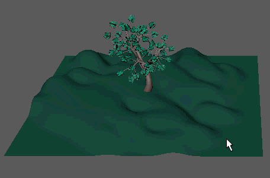

MASH 放置器允许通过在现有曲面或点上拖动鼠标光标，分别在场景中放置或修改点。
可以通过下列方式放置点：
- 在对象上拖动，将点放置到其曲面。
- 按住 M 键并拖动，精确放置、旋转和缩放点。
- 按住 Shift 键并在现有点上拖动，将其放大。
- 按住 Ctrl 键并在现有点上拖动，将其缩小。
- 按住 J 键并在现有点上拖动，将其与笔刷笔划对齐。
与所有笔刷一样，也可以按住 B 键并拖动来调整笔刷大小，或者按住 N 键并拖动来调整笔刷强度。
放置器节点
- 笔刷类型
- 确定拖动鼠标光标将如何影响点。选项包括：
- 添加笔刷(Add Brush)：在对象上拖动会将点放置在其曲面上。
- 删除笔刷(Delete Brush)：在现有点上拖动会将其移除。
- 碰撞笔刷(Collide Brush)：在现有点上拖动会均匀隔开点以避免碰撞。
- ID 笔刷(ID Brush)：在现有点上拖动会为其指定绘制 ID。
- 偏移笔刷(Nudge Brush)：在现有点上拖动会沿拖动方向将其推离笔刷中心。
- 移动工具(Move Tool)、旋转工具(Rotate Tool)、缩放工具(Scale Tool)：在现有点上拖动会使用相应的变换工具将其选中。
- 笔刷半径
- 确定启用“散射”(Scatter)时放置点的半径、按住 Ctrl 或 Shift 键时缩放点的半径、使用“碰撞笔刷”(Collide Brush)时与点碰撞的半径以及使用“删除笔刷”(Delete Brush)时删除点的半径。
- 笔刷间距
- 确定放置时所创建点的紧密程度。
- 笔刷强度
- 确定如何在按住 Shift 键并在点上拖动时快速放大点。
- 散射(Scatter)
- 一次在笔刷半径内随机创建多个点。
- 散射密度
- 确定启用“散射”(Scatter)时随着鼠标移动创建的点数。
- 创建时碰撞
- 计算放置过程中的点碰撞。选项包括：
- 关闭(Off)：放置点时忽略碰撞。
- 碰撞(Collide)：在创建时自动将点彼此推离，但点仍可相交，因为无论区域的充填程度如何，都会创建点。
- 精确(Strict)：仅当有可用空间时才创建点。
- 旋转模式
- 确定放置点时如何对点进行定向。选项包括：
- 关闭(Off)：不旋转点。
- 对齐到网格(Align to Mesh)：点对齐到它们所在的网格面。
- 对齐到笔刷(Align to Brush)：点对齐到笔刷笔划的方向。
- 倾斜量
- 朝绘制网格的曲面法线旋转点。
- 沿法线推动
- 放置点时沿其法线平移点。将点悬停在网格上时很有用。
- 对齐笔刷轴
- 限制对齐操作（按住 J 键并拖动），使其仅影响指定轴。
- 随机缩放
- 创建时在指定的数量之间随机缩放点。
- 随机旋转
- 创建时在指定的数量之间随机确定点的方向。
- 随机种子
- 调整所有随机操作的随机化值。
- ID 模式
- 确定创建时应用于每个点的 ID。选项包括：
- 固定(Fixed)：使用指定的“放置器 ID”(Placer Id)创建所有点。
- 随机(Random)：为所有点指定“随机 ID”(Random Id)范围内的随机数。
- 绘制 ID
- 确定“ID 模式”(Id Mode)设置为“固定”(Fixed)时应用于点的 ID。
- 随机 ID
- 确定“ID 模式”(Id Mode)设置为“随机”(Random)时应用于点的 ID 范围。
- 粘到绘制网格
- 确保在操纵点时这些点保留在绘制网格上。
- 捕捉到绘制网格(Snap to Paint Meshes)
- 如果在已向绘制网格中绘制点后，该绘制网格发生了变化，则单击此项。这会自动将这些点粘回到更改的网格。
- 绘制网格
- 指定可在其上放置点的网格。如果为空，则 MASH 放置器允许您在场景中的所有网格上绘制点。